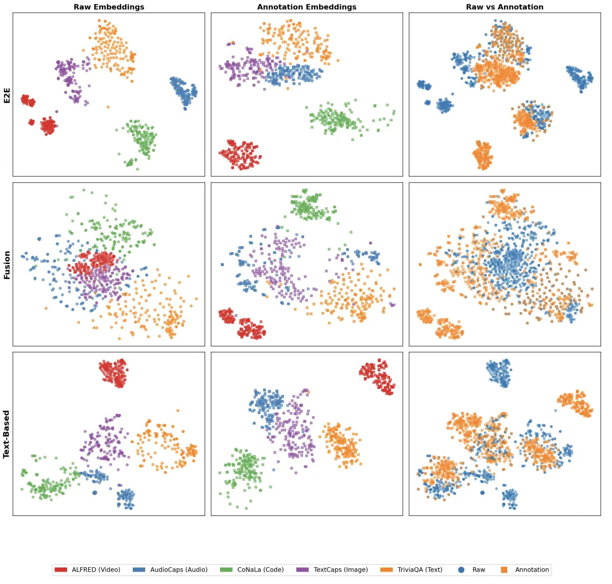
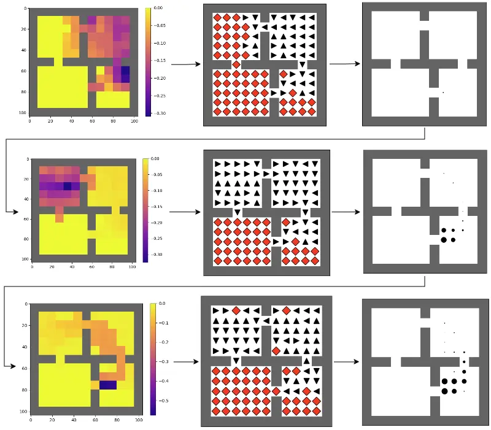
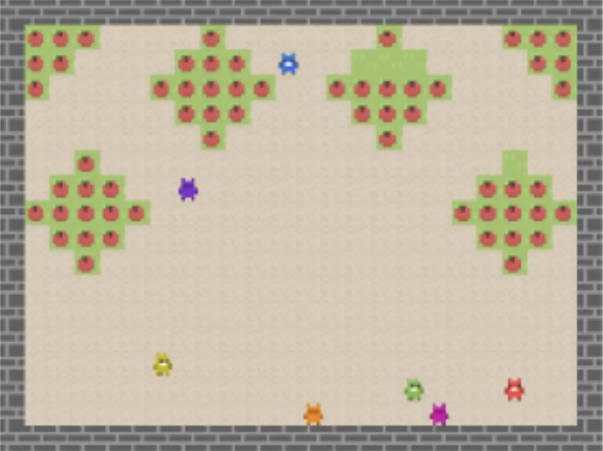
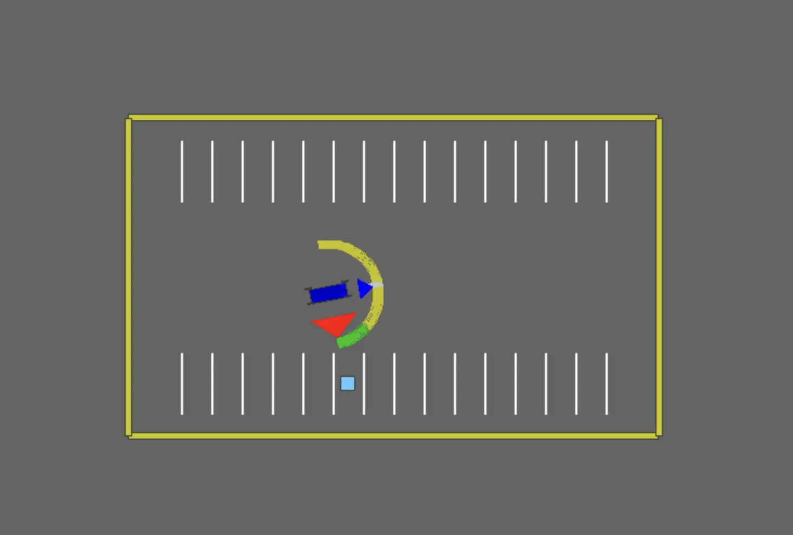
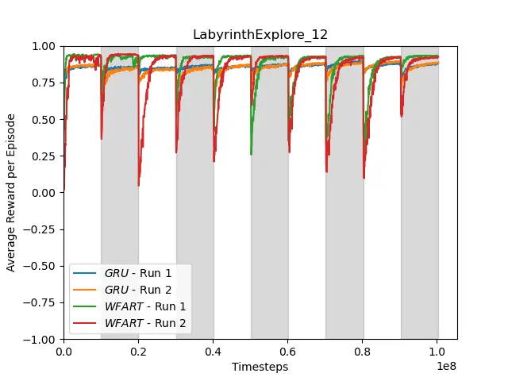

Harshil Kotamreddy
I currently work on Data Generation and Curation for Nemotron Omni at NVIDIA. Previously, I worked on Reinforcement Learning at RLAI with Marlos C. Machado. I've also interned as a Data Scientist at Disney TV Animation and City of Hope, and analyzed crime statistics for the City of Los Angeles.
Things I've Done
Foundation models trained today require large amounts of multimodal human-annotated data. Curating this data for precise training on specific tasks often requires data retrieval over different domains and modalities. We address two main limitations with current methods, (1) misalignment within data-annotation pairs and (2) modality-based clustering, by introducing a new retrieval-based data curation pipeline.

Options are an abstraction over actions in reinforcement learning. Eigenoptions, options derived from the laplacian representation, have been shown to help significantly improve sample efficiency by expediting exploration. In this work, I explore whether learning value-functions for eigenoptions further improves sample efficiency.

What if an agent's updates was influenced by its perception of the value of other agents' states (empathy) in a multi-agent environment? We tested several new actor-critic formualations that infer the value functions of other agents and avoid inequity among the collective. We found that inequity aversion in one of these new formulations indeed helped avoid a tragedy of the commons in the harvest environment.

The goal of this pilot study was to determine whether reinforcement learning (RL) agents trained on a specific task could serve as a teacher for humans learning to perform the same task. We performed an incredibly sophisticated study by setting up a laptop and a logitech racing wheel in the middle of a campus library and asking volunteers to complete a 2D parking task with and without task-specific feedback from an RL agent. We tested several forms of feedback and found that some were indeed more effective compared to the control group!

We studied whether using deep RL methods with transformers or recurrent networks helped with loss of plasticity in partially observable environments. While we weren't able to draw any firm conclusions due to time and resource constraints, we found that the combination of a recurrent network and the correct activation function showed promise in a few environments.
